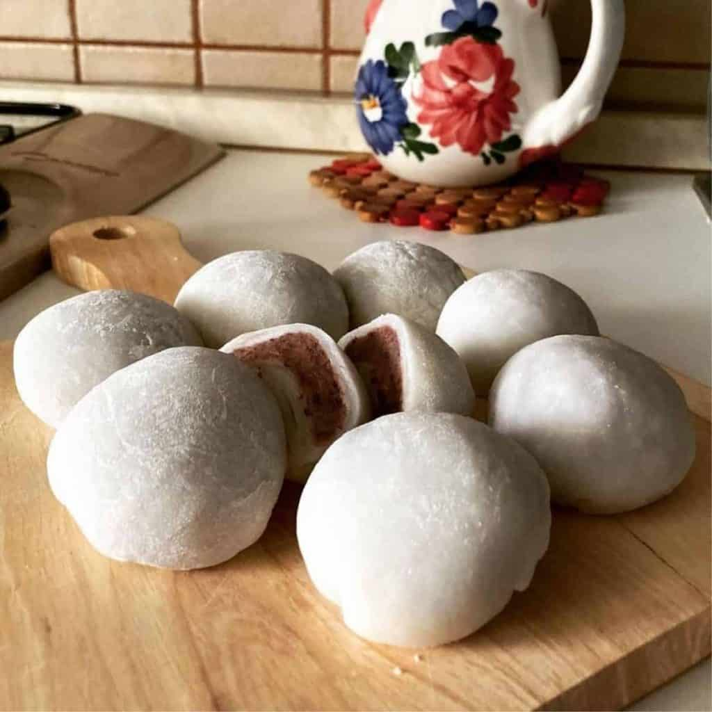

Daifuku

If clouds were a delicacy, then we've certainly found them.
Daifuku, also known as red bean mochi, is a sweet Japanese confection consisting mainly of a supple rice cake layer that wraps around a creamy filling such as red or white bean paste, ice cream and even fruits as well.
Ingredients
- 1 cup mochiko (glutinous rice flour)
- 300 ml water
- 3/4 cup sugar
- 1 cup red bean paste
- potato starch for dusting
Cooking Tips
Before attempting to make your first red bean mochi, here are some simple tips to heed.
- First, rice flour is very sticky and so when kneading or pounding rice flour, make sure your hands are slightly wet. When you are trying to shape the dough, your hands must be dry and dusted with starch. But when you have stuffed the filling, brush the excess starch away to close the ball.
- Second, rolling out the dough rather than stretching it too much by hand is better. Try not to pull the flour when shaping it into a ball or you'll create a sticky surface.
- Lastly, when you cook the rice flour, it should slowly fade to a more translucent cream colour, which shows it is well-cooked. The skin of the red bean mochi should appear thin and tender.
- Here's one more tip, not for cooking but for easy washing up. Soak any tools used in water. That way, the rice flour will not stick to the surface and lessens your washing up!
How To Store
To store, put the mochi in an airtight container, and place it in a cool, dry place. Do not make it too cold or the rice will get hard. In this cool, dry state, it can last for about a month.
If you would like to store it longer in a fridge, then add sugar. The recommendation is to use 50-100 grams of sugar for 100 grams of cooked rice flour, to help the confection store longer and stay soft.
If placed in the freezer in a sealed container, the rice cakes can stay fresh for at least six months.
Steps
- Line a sheet pan with parchment paper. Spread potato starch in a large circle on the pan and set aside.
- Whisk the mochiko flour and about 300 ml of water together until it is smooth. Pour it through a mesh strainer into a saucepan. Then add sugar and mix.
- Cook the mixture over medium heat and stir constantly. It should come together into a mass after 5-7 minutes. Now you can cut the dough.
- Cut the dough into 20 even pieces. Then, roll each piece into a flat disk.
- You can now place your red bean filling in the middle of the disk. Evenly stretch the dough around the filling and pinch it at the top to close it.
- Dust the ball with a bit of potato starch. When you are done, set the red bean mochi on the parchment sheet for serving.